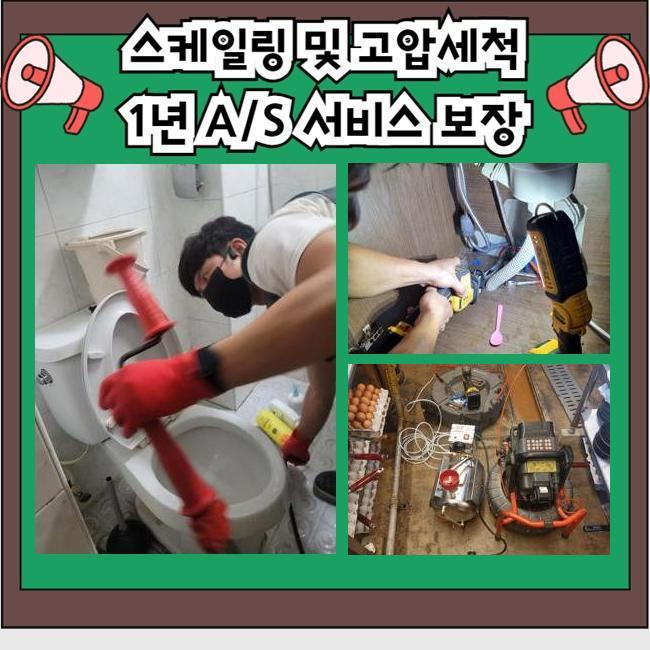
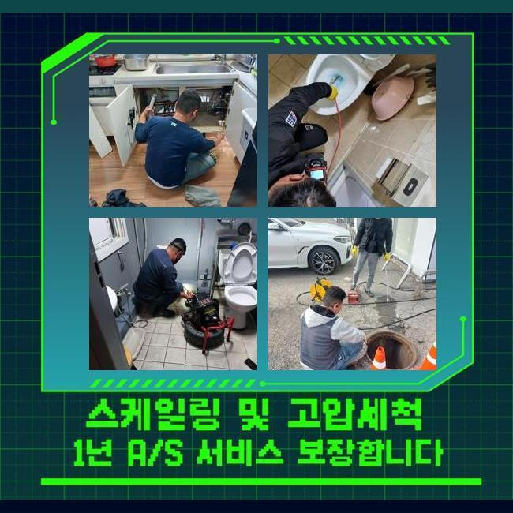
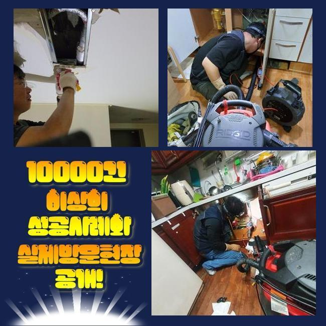
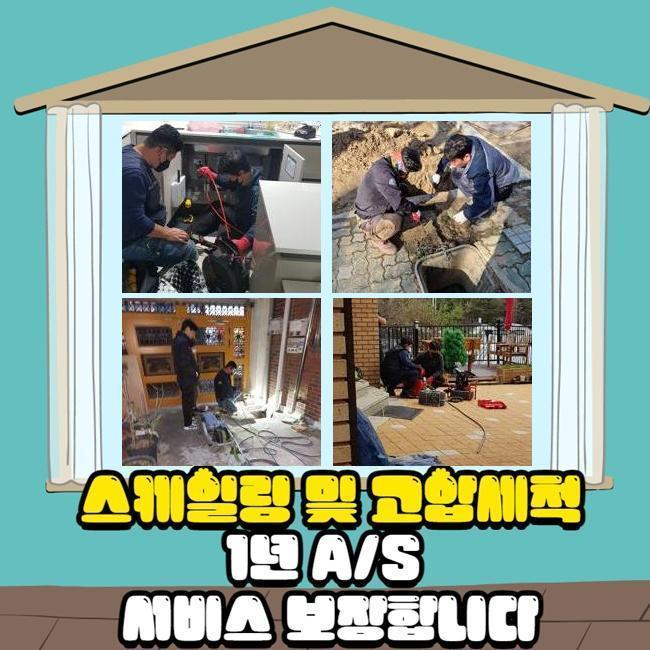
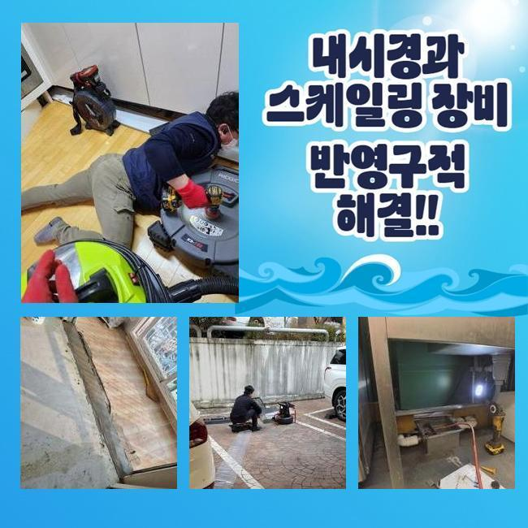
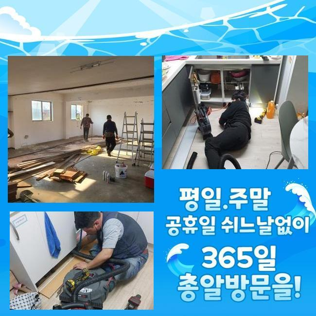

🏠 수원 호매실동싱크대역류 곡반정동 배관뚫기 설비하는곳
수원 곡반정동 싱크대막힘 전문 시공 후기

📋 작업 개요
- 위치: 수원 곡반정동, 곡반정동, 수원
- 서비스 유형: 싱크대막힘, 하수구막힘, 배관막힘, 역류해결, 뚫는업체, 배관청소, 고압세척
- 작업 일시: 2024. 11. 5. 9:32
- 업체명: 하수구수사대 (010-5615-2118)
🔍 문제 상황
수원 호매실동싱크대역류 곡반정동 배관뚫기 설비하는곳
얼마전 건축물의 외부의 관로에서 역류증상이 수면 위로 떠올라 의뢰를 해주셨는데요
정황만 들었을때도 해결이 시급하다고 판단해 빠르게 방문드려 검수를 진행해보았더니 건축된지 오래지난 주거지에서 야기된 통수결함으로 피해들이 심상치않을것을 관찰해보았습니다
일단 내시경으로 하수도를 구석구석 조사해보니 상당한 이물들이 공용라인에 엉킨것까지 인지했습니다
이것때문에 냄새까지 함께 발생된 상황을 보았습니다
악취들이 나타난 것으로 미루어볼때 오랫동안 오염원을 제거시키지않아서 발발한 상태였어요
전체적인 컨디션을 살펴보니 구석까지 잔해가 쌓여 피해가 발생된 것으로 추측했으나 명확한 검수들을 진행시키려고 내시경을 써보았죠

🔎 원인 분석
💡 전문가 진단: 정밀 진단 장비를 사용하여 슬러지의 고착 여부를 판명하고 타격/세척 작업을 실시했습니다.
내시경내시경기기로 문제구간을 관찰하니 특히 엘보라인에 이물들이 자리잡고 있었어요
돌과 같이 굳어진 이물질들을 제거할땐 샤프트기기를 운용하는것이 좋겠지만 배수관의 사이즈가 컸고 흡착된 오염물이 많았기에 고압수청소장치를 쓰기로했어요
고압노즐분사로 관로를 작업하는 과정들에서는 연결부위에 쌓이게된 기름때를 세척하기에 이르렀죠
평상 시 쉽게 해결되는 막힘들에 사용하고 있는 장비라기보다 외부하수구나 샤프트장치를 사용해도 진전이 없는 때에 쓰이는 장비인데요
위와같은 세척 검수를 이어나갈 때에는 구조들과 특이사항들을 염두에 두고 구간별로 알맞은 세기를 가하는 것이 중요하답니다
만일 해당 기기를 가정 내 이물이나 내식성이 떨어진 하수도에 사용한다면 균열의 위험도 존재하고 혹은 수리와 관련한 과중도 커지기에 올바른 작업 방향을 세워야합니다
고수압의 세척들은 노즐에서 나오는 온수들로 배관들을 세척해주는 과정들로서 출수구에서 1차적으로 이어갔는데요
그리고 엘보쪽과 벽측에는 뭉쳐진 슬러지들이 존재해있었죠

🔧 작업 과정
이에 따라 위와같은 세척 시 긴 시간들이 걸릴테지만 계속하여 진행시켜 이전과 다른 배관컨디션을 도출하기에 이르렀습니다
문제의 배수라인에 슬러지가 다수 존재하는 경우라고 한다면 고압수청소로 꼼꼼히 세척해주는게 최우선의 방식이에요
적절한 조치가 배제된다면 2차적인 막힘이 생겨날 수 있어 알맞은 해결책이 동반되야합니다
그리고 배수관을 내시경기기로 살펴 놓치지는 않았을 문제들을 체크했죠
고착화된 물질들과 굳은채 남아있던 석회들이 있었기에 석션으로 흡입한 뒤 마무리해보았어요
그 이후에 매립된 위치마다 하수구 배수관을 점검해주었습니다 현재 장소는 여러 세대가 혼재한 형태였고 여지껏 피해가 야기된 현장이였기에 이웃가구에게도 막히는 증상이 번져있었습니다
오류 지점의 위치들을 검수했습니다
철수 이전까지 끝난 후 2차적인 문제들을 막아내보고자 메인라인 내구성의 진단까지 빠트리지 않았습니다
각 관로의 청소를 위한 각 관로의 청소의 경우 계속해서 이행해 하수구의 사용기간을 보장하고 솟아오르는 증세나 물이 새는 등의 오류들을 막아낼 수 있어요
내시경장치는 집수시설 등을 관찰하는 장비로 내측의 상태를 점검하는것에 큰 비중을 차지합니다
배관들이 막히게 된 후 문의할 전문가를 선정한다면 꼭 살펴보실 항목은 내시경장치를 쓰고있는것인지 유무를 먼저 살펴보세요!
이후에 해당 피해가 발생된다면 빠르게 내방드려 증상들을 조치해드릴게요


✅ 작업 완료
흡입기기와 샤프트장치 전동 스프링까지 써서 슬러지들을 제거하고 고압노즐분사로 작업을 수행하고 있습니다
작업 시 발생되는 이물은 고수압 분사로 세척하며 철수전에도 고객의 현장 내부에서 불거진 하수구막힘을 확실하게 해소시킵니다
그저 이물질들을 제거함과 동시에 고객분의 편의들을 고려해 하수시스템들을 긴 시간동안 사용하시도록 도와드릴게요




⚠️ 주방 싱크대 배관 막힘 예방 수칙
- ✅ 기름기가 묻은 식기나 프라이팬은 설거지 전 키친타올로 반드시 기름때를 닦아내세요.
- ✅ 주기적으로 싱크대 개수대에 뜨거운 물을 가득 받아 한 번에 내려 배관 내부 기름을 씻어내세요.
- ✅ 배수구 거름망을 미세한 필터로 사용하시고 음식물 찌꺼기가 틈으로 새어 들지 않게 관리하세요.
- ✅ 베이킹소다와 식초를 뜨거운 물과 함께 일주일에 한 번씩 부어주면 배관 살균과 막힘 예방에 좋습니다.
💡 핵심 정리
- 확실한 장비 작업(내시경 점검 및 샤프트 스케일링)으로 원인을 뿌리 뽑습니다.
- 작업 후 1년 이내에 동일한 부위 재발 시 100% 무상 A/S 서비스를 보장합니다.
- 서울 · 경기 · 인천 전 지역에 24시간 언제든 긴급 출동할 수 있도록 항시 대기 중입니다.
❓ 자주 묻는 질문 (FAQ)
🚨 수원 곡반정동 싱크대막힘 문제로 고민이신가요?
정확한 원인 진단과 확실한 시공으로 재발 없는 해결을 약속드립니다.
24시간 긴급 출동 | 서울 · 경기 · 인천 전지역 | 1년 내 재발 시 무상 A/S